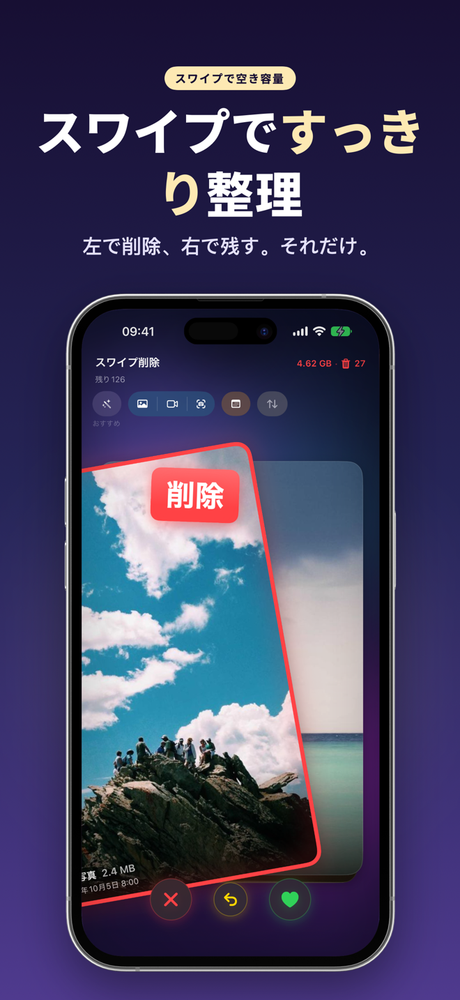
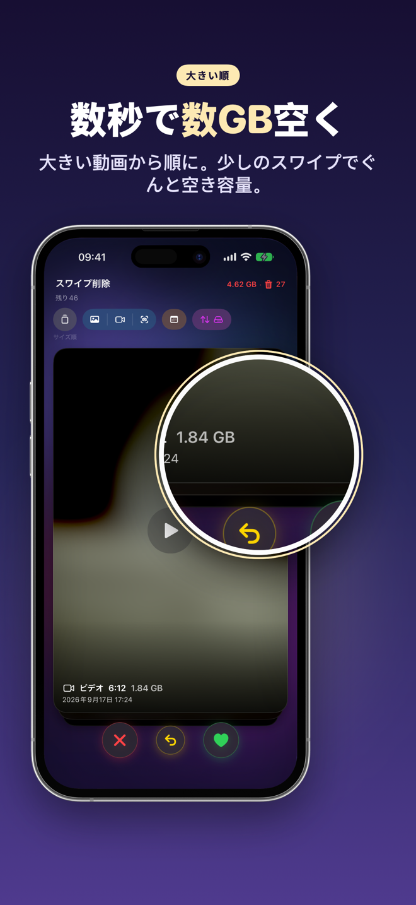
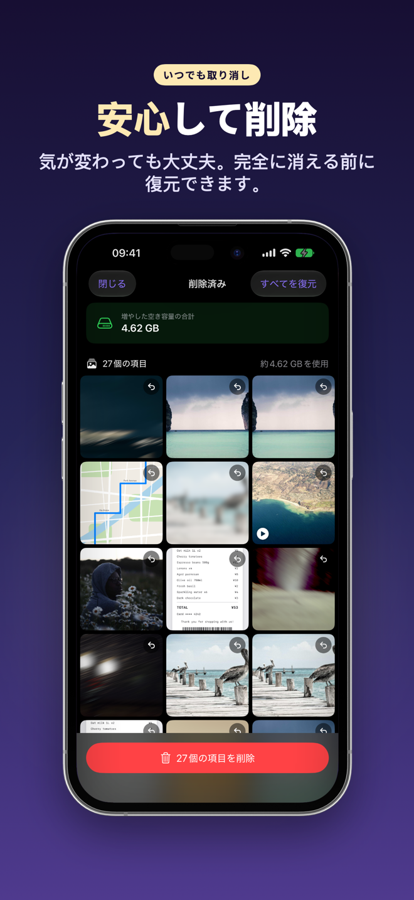
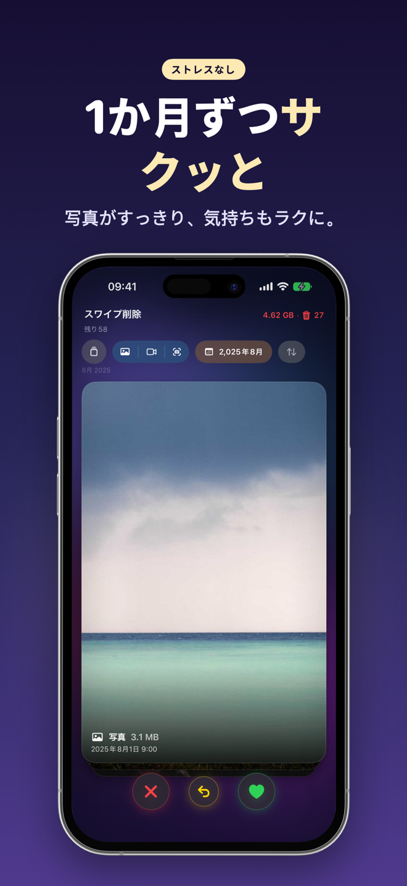
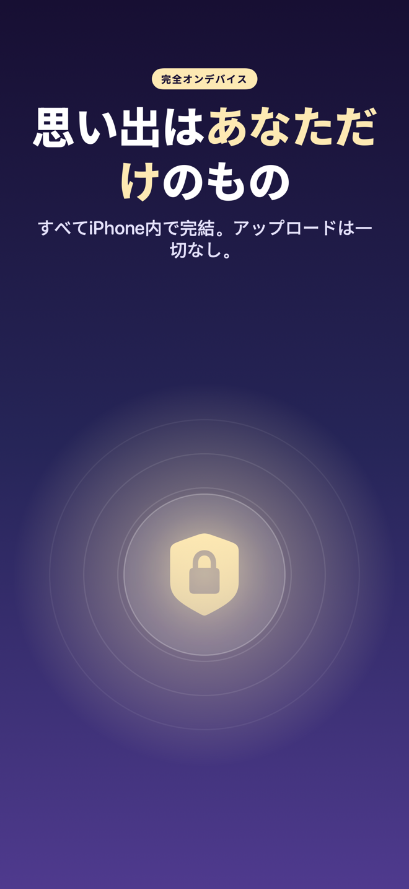
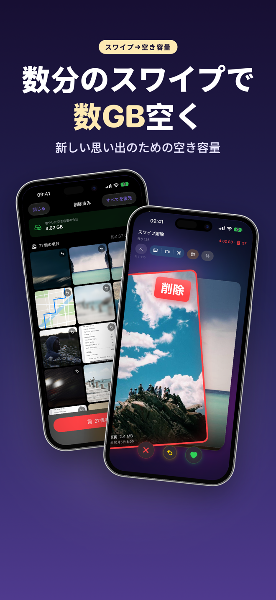
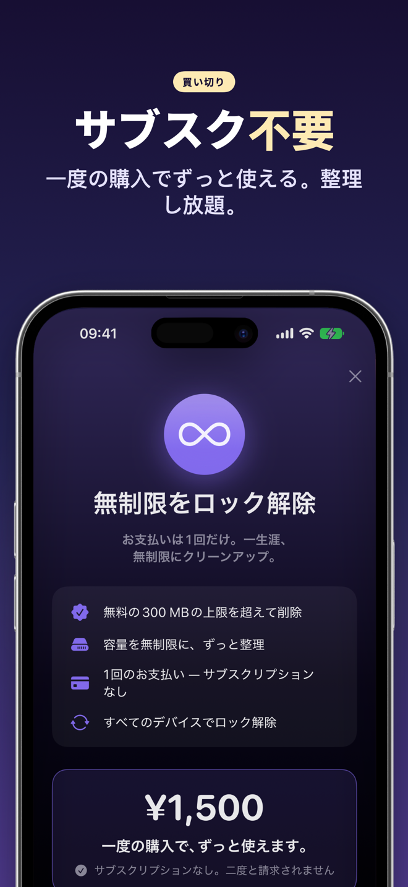

SwipeDelete · 写真整理
スワイプで写真整理。iPhoneの空き容量をすばやく取り戻す
カメラロールの整理が、カードをめくるように楽しくなる。左にスワイプで削除候補へ、右にスワイプで残す。たったそれだけで、たまった写真や動画をサクサク片づけられます。
近日公開App Store処理はすべて端末内 · 安心のゴミ箱 · 買い切り、月額課金なし

ゲーム感覚で写真整理を始めよう
どこから手をつければいいかわからなくても大丈夫。明らかな不要写真から始められ、最終判断はいつもあなたです。
近日公開App Store- スマート提案スクショ、似た写真、バースト、ブレた写真を先頭に表示。
- 大きいファイルからサイズ順で、少ないスワイプで効率よく空き容量を増やせます。
- 二重の安心アプリ内ゴミ箱と、削除前のiOSの確認。
- プライバシーを大切に写真がクラウドにアップロードされることはありません。
1枚1秒で判断、リズムよく整理
スワイプと触覚フィードバックで気持ちよく。横にスクロールしてすべての画面を見る →
左で削除、右で残す 
大きい動画から整理 
いつでも元に戻せる 
1か月ずつ整理 
すべて端末内で処理 
数分のスワイプで容量確保 
買い切り
使い方
4ステップですぐに始められます。
写真へのアクセスを許可
SwipeDeleteを開き、写真ライブラリへのアクセスを許可します。分析は端末内で行われます。
始める場所を選ぶ
スマート提案、写真・動画・スクリーンショット、年や月で絞り込み、またはサイズ順。
スワイプで判断
左で削除候補、右で残す。間違えたら直前の操作を取り消し。
確認して削除
ゴミ箱を一覧で確認し、必要なものを戻してから削除を確定します。
よくある質問
iPhoneでたくさんの写真をすばやく削除するには？
SwipeDeleteなら、写真や動画をカードのように左右にスワイプするだけ。左で削除候補へ、右で残します。直前の操作はすぐに取り消せます。詳しく見る（EN）
間違えて消した写真は戻せますか？
はい。左にスワイプした写真はいったんアプリ内のゴミ箱へ入り、1枚ずつ戻すことも、まとめて削除することもできます。最終的な削除の前にはiOSの確認も表示されます。詳しく見る（EN）
重複写真やスクショを見つけられますか？
スマート提案が、スクリーンショット、似た写真、選ばれなかったバースト、ブレた写真を先頭に表示します。詳しく見る（EN）
少ない操作で空き容量を増やすには？
サイズ順に並べて、大きいファイルから整理しましょう。少ないスワイプで効率よく空き容量を増やせます。詳しく見る（EN）
写真がクラウドにアップロードされますか？
いいえ。すべての処理はお使いのデバイス内だけで完結します。プライバシーポリシー（EN）
月額課金ですか？
いいえ。300MBまでは無料で整理を体験でき、気に入ったら一度の購入で無制限に利用できます。利用規約（EN）
新しい思い出のための空きスペースを
SwipeDeleteはまもなくApp Storeで公開予定です。
近日公開App Store